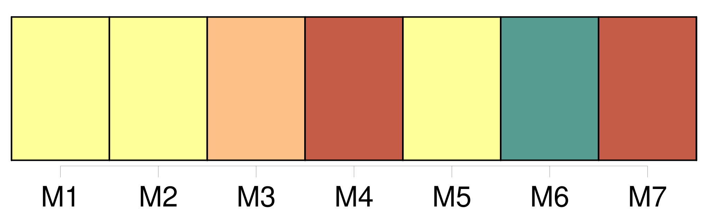
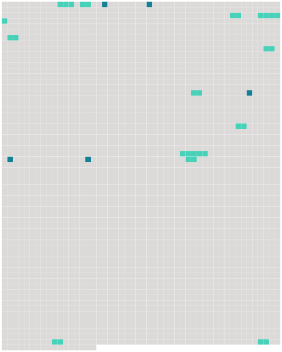

Longueur nb maillons : 17 mentions |
 |
Mon père me dit que nous retrouverions à La Varenne [des gens agréables] , [les Grangier] Je [les] connaissais pour avoir vu le nom de [leur] fille, Marthe, dans le catalogue d'une exposition de peinture. [5 phrases] Sur le quai de la gare de La Varenne, [les Grangier] nous attendaient. [M. et Mme Grangier] devaient être du même âge, approchant de la cinquantaine. [6 phrases] Je tremblais à la perspective d'une promenade sans autre compagnie que celle de [ses parents] [9 phrases]
Mon père marchait derrière, entre [les Grangier] [20 phrases] [Ses parents] avaient fini par admettre ses goûts. Marthe [leur] en voulait que ce fût par tendresse. [13 phrases] Quelquefois [ses parents] l'appelaient : « Regarde, Marthe, à ta droite, comme les coteaux de Chennevières sont jolis », ou bien, son frère s'approchait d'elle et lui demandait le nom d'une fleur qu'il venait de cueillir. [10 phrases]
J'oubliais que [M. et Mme Grangier] eussent pu entendre sans le moindre inconvénient tout ce que j'avais dit à [leur] fille ; mais, moi, aurais -je pu le lui dire en [leur] présence? [1 phrases]
Donc, seuls, [ses parents] et mon père m'empêchent de me pencher sur son cou et de l'embrasser. [88 phrases] Je ne pensais pas tant au plaisir de Marthe qu'à la nécessité pour elle de mentir encore ce soir pour expliquer à [ses parents] d'où venaient les roses. Notre projet, lors de la première rencontre, d'aller à une académie de dessin ; le mensonge du téléphone qu'elle répéterait, ce soir, à [ses parents] , mensonge auquel s'ajouterait celui des roses, m'étaient des faveurs plus douces qu'un baiser. |
 |
Il est possible de télécharger la ressource sur la page Ortolang |
Si vous avez des questions ou vous voyez des erreurs, merci d'envoyer un mail à silvia.federzoni89@gmail.com |